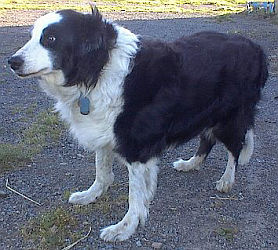

San Antonio, Texas, USA
Lé 25 de juin, 1983.
 La s'maine pâssée, j'vouos pâlais des crianches dé nouos anciens entouôrre les ouaîsieaux. Eh bein, il' en avaient entouôrre les annimaux étout, et quandi qu' j'ai l'sujet dans l'idée j'm'en vais vouos en donner tchiqu'eunes, et j'm'en vais c'menchi par lé tchian, lé fidèle anmîn d'l'homme.
Quand i' veurt vouos dithe bonjour ou vouos faithe la beinv'nue, i' ouasse et châque sa coue pour annoncer san pliaîsi d'vouos vaie. Mais s'il a'té êl'vé et duit par san maître comme tchian d'garde, i' ouasse pour vouos avèrti d'n'appréchi pon d'vant qu'san maître donne pèrmission. I' faut êt' sus ses gardes si la coue est raide et înmobile quandi qu'i' ouasse, et i' faut s'en mêfier, car i' n'est qu'à faithe san d'vé comme gardgien.
Pour empêchi un tchian d'ouasser ou d'mordre, l's anciens avaient eune fanmeuse crianche. Ch'tait d'èrciter trais fais, en lé r'gardant: "Bare Barbare! Que ta queue pende en bas! Que la clef de St. Pierre te ferme les mâchoires jusqu'à demain!" Chutte èrcitâtion étant en Français, nou sé d'mande si l'maître du tchian li'avait apprîns l'Français, car quand j'tais mousse les tchians n'savaient qué l'Jèrriais! Et j'n'ai janmais ouï si chutte èrcitâtion adouochissait l'attitude du tchian d'garde. Quant à mé, lé tchian, pas trop c'mode ou trantchil'ye, est lé vrai anmîn d'l'homme.
Eune aut' crianche entouôrre lé tchian est qué quand i' heurle la niet ch'est sîngne dé mort dans l'vaîsinné. Ch'est un avèrti. Quant à mé, si j'avais à înventer eune crianche entouôrre chu fanmeux tchian, j'dithais qué quand i' s'gratte ch'est sîngne tch'il a des puches!
À ch't heu, jé v'nons ès cats. L's anciens criyaient tch'il' avaient un vèr au but d'la coue, et tch'i' fallait qu' nou lus copîsse pour tch'i' pûssent craître! Eune aut' crianche est qué quand un cat est à s'litchi driéthe les ouothelles, ch'est sîngne dé plyie. D'aut's craient qué ch'est sîngne dé visite. Et quand un cat mange dé l'hèrbe ch'est sîngne dé plyie étout. Un nièr cat tchi pâsse en d'vant d'eune fénêtre annonce la visite d'un êtrangi, et un nièr cat tchi crouaise la route annonce bouanne chance.
I' n'pathaît pon y'aver ieu fort dé biches dans l'Île lé temps pâssé car j'n'ai connu qu'eune crianche entouôrre. Ch'tait qu' nou-s-en gardait ieune dans eune êtabliée d'vaques pour bouanne chance contre les maladies. La vielle crianche, acouo bein êtablyie et vivante quand j'tais mousse y'a nénante ans, qué les vaques lus agenouoillent à mînniet la Sèrvelle dé Noué en adorâtion du Sauveur, et qué ch'tait mauvaise chance d'entrer dans eune êtabl'ye à ch't' heuthe-là, même assez pour y tchaie mort, est bein connue.
Ouaithe tchi ieûsse tout pliein d'brébis en Jèrri l'temps pâssé, j'n'ai ouï qu'eune crianche à lus êgard, mais i' y'en avait probabliément un tas. La seule qué j'aie ouï est qué quand les brébis bêlent, ou quand i' sautent et jouent d'eune manniéthe folâtre, ch'est sîngne dé plyie. Et quand les boeufs s'liquent contre lus corps, ch'est sîngne dé plyie étout. Et y'avait eune crianche qué si eune vaque enfl'ye sus du trêfl'ye à la rosée, ch'tait viyant qu'un hérisson y'avait pâssé.
 Chu nobl'ye annima, lé j'va, 'tait l'sujet d'crianches étout. Appathemment, sa couleu 'tait d'împortance, car eune crianche était qué quand nou vait un blianc j'va, i' faut êcopi pour aver bouanne chance. Eune aut' crianche 'tait qu' un j'va atout quat' blianches pattes et un blianc nez n'valait rein!
Chu nobl'ye annima, lé j'va, 'tait l'sujet d'crianches étout. Appathemment, sa couleu 'tait d'împortance, car eune crianche était qué quand nou vait un blianc j'va, i' faut êcopi pour aver bouanne chance. Eune aut' crianche 'tait qu' un j'va atout quat' blianches pattes et un blianc nez n'valait rein!
Lé couochon (respé) qué j'connaîssons tous si bein n'était pon oublié, affaithe dé crianches, par nouos anciens. Y'en avait ieune tchi nouos disait qué quand les couochons portent du fain et d'la paille dans eune carre dé la cotte pour muchi, ch'est sîngne dé plyie.
Y'avait un tas d'crianches tchi voulaient dithe sîngne dé plyie. Ieune était qué ch'en 'tait sîngne quand nou ouait les rainottes, eune aut' qué ch'en 'tait sîngne quand un cor fait ma, quand nou-s-êtèrnue, quand les cannards battent lus ailes, et quand l's héthondes volent au ras d'tèrre. Quand un cor fait ma, ch'est, étout, sîngne dé vent ou d'fraid, enfin d'mauvais temps. Pâlant d'cors, les femmes en mettent-t'i' d'nouos jours? J'm'èrsouveins qué Manman L'Feuvre en m'ttait iun y'a nénante ans, et ou fouôrrait eune haleine en d'vant. Mais ayant 'té veuvi souoxante-quatre ans jé n'sai pon comment qu' les femmes lus habil'yent à ch't heu!
Eh bein, né v'là assez d'crianches à èrténîn pour lé moment. I' faut en garder pour eune aut' fais!
Bibliographie: Les Bulletîns d'Quart d' An d'L' Assembliée d'Jèrriais.
Viyiz étout: